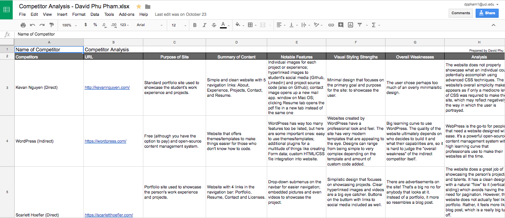
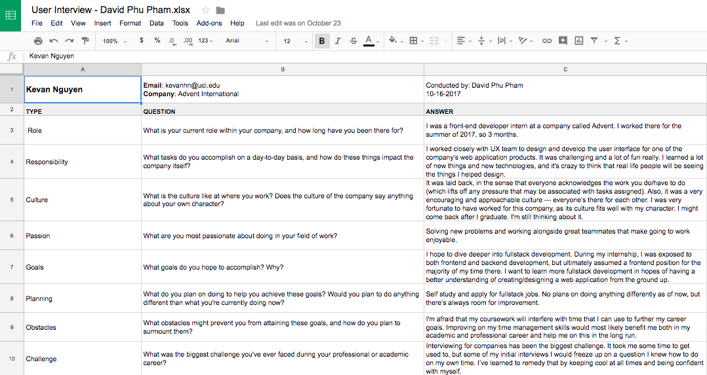
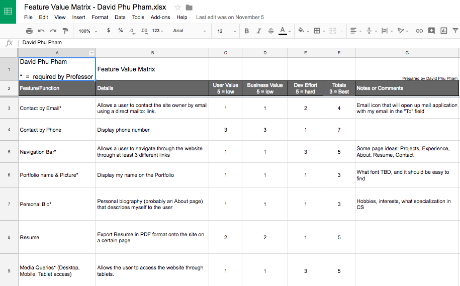
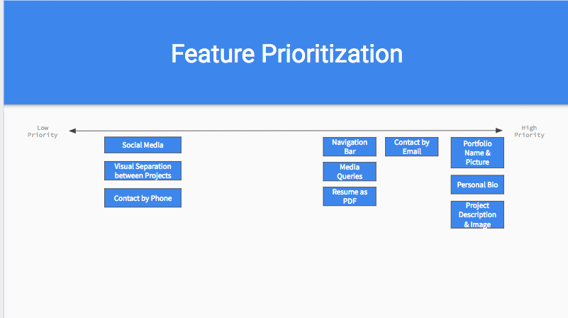
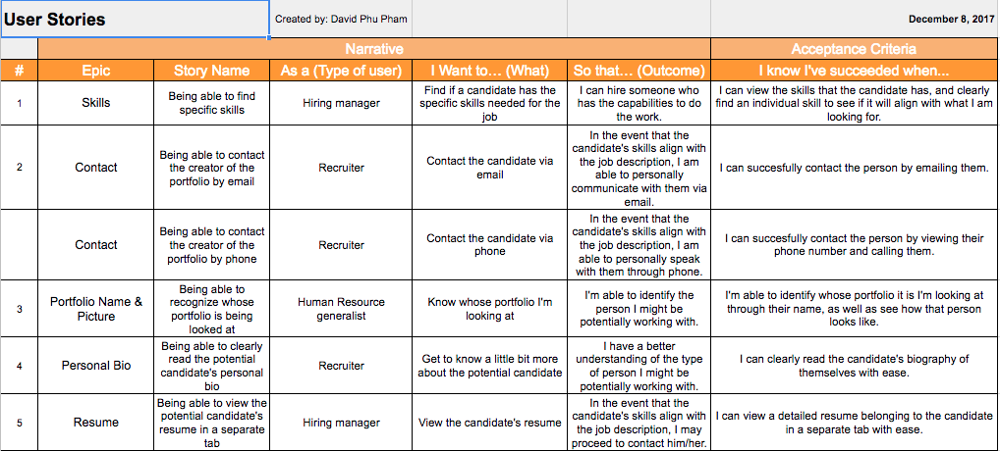
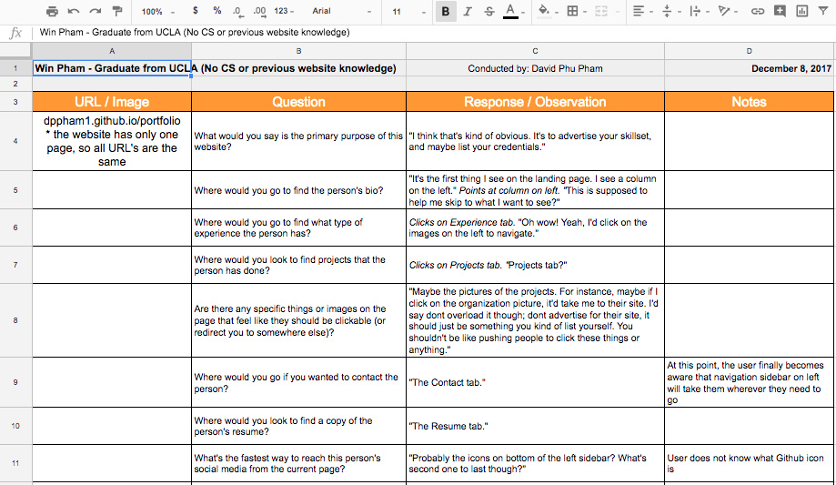
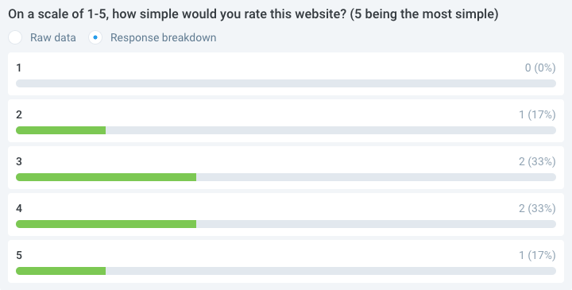

User Research
Competitor Analysis
A competitor analysis is defined as "...identifying your competitors and evaluating their strategies to determine their strengths and weaknesses relative to those of your own product or service." Here, I've taken a look at a variety of different portfolio websites and analyzed their respective strengths and weaknesses so that I could incorporate some of their strongest elements into my very own portfolio. I analyzed direct competitors (e.g. other portfolios from students or front-end developers), as well as indirect competitors (e.g. Wordpress). View the Competitor Analysis.
User Interviews
Asking users about what elements they wanted to see in a portfolio was a great first step in making sure that I created something useful and practical. I interviewed 3 different people (all working or interning for reputable Software Development companies), and received their opinion on what a well-built portfolio should look like. I asked questions that would help give me an idea of how to build my site, such as "If you were to create your own portfolio, what are some features that you think would add value to it?" I then incorporated some of their input into this website that you're looking at right now! View the User Interviews.
Feature Value Matrix
Like with any process of software development, it's always important to prioritize features. To demonstrate that I really do know how to decide which features should be implemented first and which ones last, I created a Feature Value Matrix, where I calculated the importance of each feature to the user, how easy it would be to implement, and the business value of each individual feature. I prioritized features of utmost importance that any portfolio should have first, such as a navbar and contact method, then moved down to features that were maybe slightly unnecessary (i.e. social media icons). View the Feature Value Matrix.
Feature Prioritization
Similar to the Feature Value Matrix, I created a Feature Prioritization graph to help visualize which features should be built first, and which ones last (still retaining the idea of utmost important features going first and slightly unnecessary features last). Visuals are always a plus, and this helped me to visualize the Feature Value Matrix easily. View the Feature Prioritization.
User Testing
User Stories
User stories have helped me in determining the potential different types of people that end up viewing my portfolio. With this, I was able to cater the design of my website towards a variety different users' needs, including hiring managers, recruiters, and UX hiring managers. View the User Stories.
Cognitive Walkthrough
A cognitive walkthrough helps to get into the mind of the user. Navigating a website that you've built yourself may be easy, but we can't assume that the user knows how to navigate your site in the same way. Cognitive walkthroughs have helped me with this problem. With them, I have a clear understanding of how different users use my website, and what their thought process is while doing so. I had fun with the cognitive walkthrough, and had no challenges with making it! View the Cogntive Walkthrough.
Usability Tests
The final part of my User Testing involved two types of tests: click tests, and question tests. Click tests helped me gather information on how easy (or difficult) my navbar was to use, and question tests helped me gather general information/feedback from users that visited the site. I faced no challenges for this part of the testing, and overall, results show that my website is simple and easy to navigate.
View the Usability Test (General - Questions Test).
View the Usability Test (Navbar - Click Test).
Summary of Findings
Through extensive research and testing, I found that a majority of users had an easy time navigating my website. Many users gave me positive feedback; they liked the simplistic look, how things were easy to find, the layout of the website, and the color scheme. They also thought that the website design was consistent in every section and page. All of these traits were things that I initially sought to incorporate into my website, so I'm content with the results.
In addition to positive feedback, though, I also received some negative feedback. There were a few users that thought the website design was maybe too simplistic, and another handful didn't know what some of the social media icons were (particularly the Github icon for non-developers that I interviewed). This was a design choice of mine that I incorporated on purpose, but I think some adjustments can be made to the site to make it more interactive.
Fortunately, I faced no challenges throughout my user research and testing. All of the users I interacted with were kind and cooperated with full intentions to give me valuable feedback. A big thanks to all the users I tested!
Incorporation of Findings
After careful revision of the feedback I've received, I plan to tweek my website accordingly. I've decided to use Javascript in order to add animations to the site that will help make it more "flashy", and I'm going to add text with a smaller font to icons that I think non-developers would have a hard time understanding.
I think redesigning my website according to user feedback is a must. Though I had intentions of making a simple and clean website, I think there are ways to make the website more interactive without losing the simplistic touch. This is a challenge that I think I'll be facing constantly, because I'll always be modifying my website to how different users see fit.
In closing, I think that the whole user research and testing idea has helped me tremendously. This concept was something that I had never thought of. I knew that any sort of developer should strive to design their product around the user's needs, but giving a name to the process and walking through the system has significantly helped boost my understanding of how interfaces can be improved. Here are some key features that I've worked on in the first iteration of my website:
- Added "Skills" section in navbar
- Added "Research" section in navbar
- Added captions for all navbar icons
- Created Research page
- Made pictures in the "Experience" section clickable